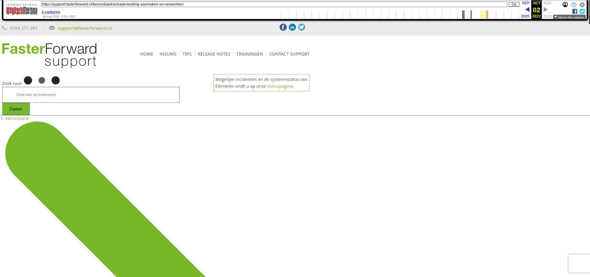

Schademelding aanmaken en verwerken

Tekstinhoud
Title: Schademelding aanmaken en verwerken - Faster Forward Support
URL: https://web.archive.org/web/20221002085440/https://support.fasterforward.nl/kennisbank/schademelding-aanmaken-en-verwerken/
Source element: <article>
---
Schademelding aanmaken en verwerken
De klant dient een schademelding in. Deze wil je natuurlijk in het klantdossier verwerken en afhandelen. Wanneer er een schademelding binnenkomt, kun je deze direct in het klantdossier verwerken.
Aanmaken schademelding
Invoeren informatie schademelding
Documenten uploaden
Primaire schadedocument
Schadedocument publiek zetten
Partijen
Financiële verwerking
Overzicht schademeldingen
Aanmaken schademelding
Ga naar het desbetreffende product in het klantdossier;
Klik in het snelmenu op 'Schademelding aanmaken' (of ga naar het tabblad 'Schademelding' en klik hier op + om een schade aan te maken.)
Invoeren informatie schademelding
Voer vervolgens in de schadekaart alle informatie over de schademelding in. Wanneer je dit gedaan hebt, volg je de workflow om de schade verder af te werken.
Let op:
De groene velden zijn verplichte velden;
Er dient altijd een contractdeel geselecteerd te worden, waar de schademelding aan gekoppeld dient te zijn. Dit is het rechter pakketonderdeel van de schadekaart.
De voorwaarde hiervan is dat de datum van de schademelding moet liggen tussen de start- en einddatum van het pakketonderdeel.
Ook moet de propositiedatum niet na de schadedatum liggen. Is dit het geval dan kan je propositiedatum wijzigen door te klikken op het pijltje in de datum en te kiezen voor 'Nieuwe datum'. Je kunt dan de datum aanpassen
Start de workflow voor schademelding niet automatisch op? Neem dan contact op met support@fasterforward.nl.
Documenten uploaden
Het is mogelijk om onder de schademelding documenten te uploaden. Dit doe je via de Schademelding – tabblad Documenten – het groene plus icoon.
Primaire schadedocument
Hier kan je aangeven of dit het primaire schadedocument moet worden:
Het primaire schadedocument wordt in de preview van de schademelding getoond. In de lijst met documenten onder de schademelding kun je vervolgens met de groene pin het primaire schadedocument aanpassen. Deze is dan altijd zichtbaar bij het openen van de schademelding. Wanneer je dit niet aanpast met de pin, blijft het eerst geüploade (of gekoppelde) document zichtbaar.
Schadedocument publiek zetten
Na het uploaden is een document niet zichtbaar (niet publiek) in de Digimap/UwKluis. Met de oranje 'publiek' knop maak je het document eenvoudig zichtbaar voor je klant (publiek).
Partijen
Het is mogelijk om in Elements schade uit te betalen aan een derde partij bij een schademelding indien je gebruik maakt van TP incasso in Elements. Deze 'derde' partij is eenmalige informatie in Elements en hoeft daarom niet als persoon/organisatie opgevoerd te worden. Daar vind je het tabblad 'Partijen'. Klik op de button 'Betrokkenen toevoegen'. Hier vul je de naam in van de derde partij met IBAN nummer.
Bij het toevoegen van een partij kan gekozen worden voor 'kopiëren van bestaande relatie'. Dan heb je de mogelijkheid de gegevens van een bekend persoon uit Elements over te nemen. Er wordt geen link gelegd tussen de personen. De gegevens van de partij worden alleen gekopieerd en opgenomen in het schadedossier.
Let op: wanneer je gegevens van de partij in het schadedossier aanpast worden deze niet op alle plaatsen in Elements aangepast, maar exclusief in het schadedossier.
Financiële verwerking
Lees hier meer over de financiële verwerking van de schademelding.
Overzicht schademeldingen
In het overzicht met schademeldingen vind je alle schademeldingen terug. Hier kan je er meer over lezen.
Laatste update: 27 juli 2022
Tagged: schade, schade melden, verwerken
Was deze informatie nuttig?
Ja Nee